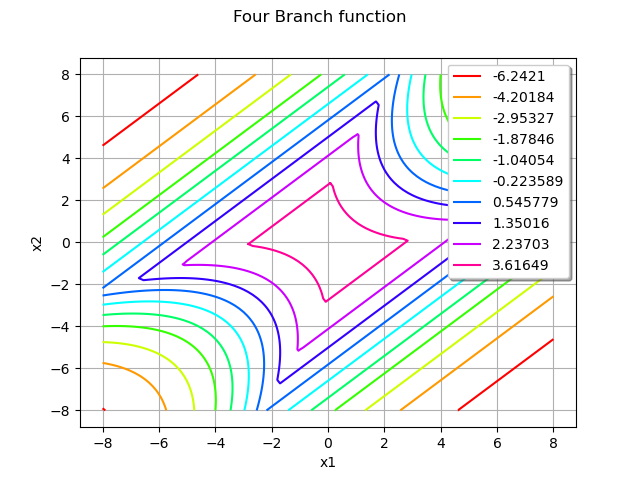
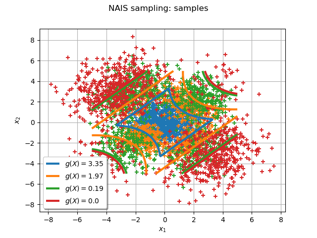
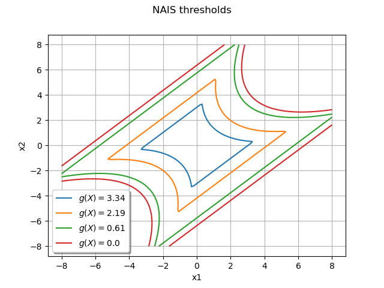

Note
Click here to download the full example code
Non parametric Adaptive Importance Sampling (NAIS)¶
The objective is to evaluate a probability from the Non parametric Adaptive Importance Sampling (NAIS) technique.
We consider the four-branch function defined by:
and the input random vector which follows the standard 2-dimensional Normal distribution:
We want to evaluate the probability:
First, import the python modules:
import openturns as ot
from openturns.viewer import View
import math
Create the probabilistic model ¶
Create the input random vector  :
:
X = ot.RandomVector(ot.Normal(2))
Create the function  from a
from a PythonFunction:
def fourBranch(x):
x1 = x[0]
x2 = x[1]
g1 = 5+0.1*(x1-x2)**2-(x1+x2)/math.sqrt(2)
g2 = 5+0.1*(x1-x2)**2+(x1+x2)/math.sqrt(2)
g3 = (x1-x2)+9/math.sqrt(2)
g4 =(x2-x1)+9/math.sqrt(2)
return [min((g1,g2,g3,g4))]
g = ot.PythonFunction(2,1,fourBranch)
Draw the function to help to understand the shape of the limit state function:
graph = ot.Graph('Four Branch function','x1','x2',True,'topright')
drawfunction = g.draw([-8]*2,[8]*2,[100]*2)
graph.add(drawfunction)
view = View(graph)

In order to be able to get the NAIS samples used in the algorithm, it is necessary to transform the PythonFunction into a MemoizeFunction:
g = ot.MemoizeFunction(g)
Create the output random vector :
Y = ot.CompositeRandomVector(g, X)
Create the event ¶
threshold = 0.0
myEvent = ot.ThresholdEvent(Y, ot.Less(), threshold)
Evaluate the probability with the NAIS technique¶
rhoQuantile = 0.1
algo = ot.NAIS(myEvent,rhoQuantile)
Now you can run the algorithm.
algo.run()
result = algo.getResult()
proba = result.getProbabilityEstimate()
print('Proba NAIS = ', proba)
print('Current coefficient of variation = ',
result.getCoefficientOfVariation())
Proba NAIS = 7.021998687102318e-06
Current coefficient of variation = 0.10101452954018557
The length of the confidence interval of level is:
length95 = result.getConfidenceLength()
print('Confidence length (0.95) = ', result.getConfidenceLength())
Confidence length (0.95) = 2.7804985704804375e-06
which enables to build the confidence interval:
print('Confidence interval (0.95) = [', proba -
length95/2, ', ', proba + length95/2, ']')
Confidence interval (0.95) = [ 5.6317494018621e-06 , 8.412247972342536e-06 ]
Draw the NAIS samples used by the algorithm¶
The following manipulations are possible only if you have created a MemoizeFunction that enables to store all the inputs and outputs of the function .
Get all the inputs and outputs where were evaluated:
inputNAIS = g.getInputHistory()
outputNAIS = g.getOutputHistory()
nTotal = inputNAIS.getSize()
print('Number of evaluations of g = ', nTotal)
Number of evaluations of g = 4000
Within each step of the algorithm, a sample of size  is created, where:
is created, where:
N = algo.getMaximumOuterSampling()*algo.getBlockSize()
print('Size of each subset = ', N)
Size of each subset = 1000
You can get the number of steps with:
Ns = int(nTotal / N)
print('Number of steps = ', Ns)
Number of steps = 4
Now, we can split the initial sample into NAIS samples of size :
listNAISSamples = list()
listOutputNAISSamples = list()
for i in range(Ns):
listNAISSamples.append(inputNAIS[i*N:i*N + N])
listOutputNAISSamples.append(outputNAIS[i*N:i*N + N])
And get all the levels defining the intermediate and final thresholds given by the empirical quantiles of each NAIS output sample:
levels = ot.Point()
for i in range(Ns-1):
levels.add(listOutputNAISSamples[i].computeQuantile(rhoQuantile)[0])
levels.add(threshold)
The following graph draws each NAIS sample and the frontier where is the threshold at the step  :
:
graph = ot.Graph('NAIS samples','x1','x2',True,'bottomleft')
graph.setGrid(True)
Add all the NAIS samples:
for i in range(Ns):
cloud = ot.Cloud(listNAISSamples[i])
graph.add(cloud)
col = ot.Drawable().BuildDefaultPalette(Ns)
graph.setColors(col)
Add the frontiers where is the threshold at the step :
gIsoLines = g.draw([-8]*2, [8]*2, [128]*2)
dr = gIsoLines.getDrawable(2)
for i in range(levels.getSize()):
dr.setLevels([levels[i]])
dr.setLineStyle('solid')
dr.setLegend(r'$g(X) = $' + str(round(levels[i], 2)))
dr.setLineWidth(3)
dr.setColor(col[i])
graph.add(dr)
view = View(graph)

Draw the frontiers only¶
The following graph enables to understand the progression of the algorithm from the mean value of the initial distribution to the limit state function:
graph = ot.Graph('NAIS thresholds','x1','x2',True,'bottomleft')
graph.setGrid(True)
dr = gIsoLines.getDrawable(0)
for i in range(levels.getSize()):
dr.setLevels([levels[i]])
dr.setLineStyle('solid')
dr.setLegend(r'$g(X) = $' + str(round(levels[i], 2)))
dr.setLineWidth(3)
graph.add(dr)
graph.setColors(col)
view = View(graph)

Total running time of the script: ( 0 minutes 0.492 seconds)